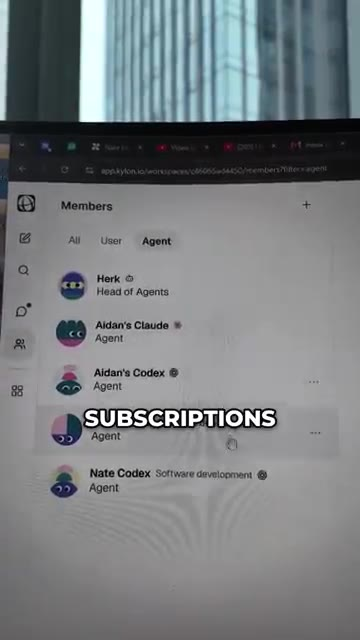
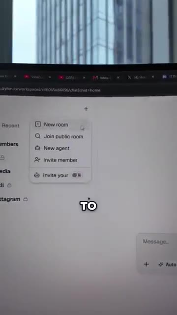
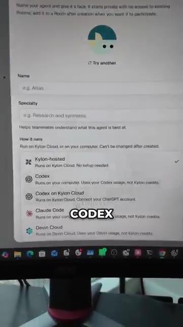
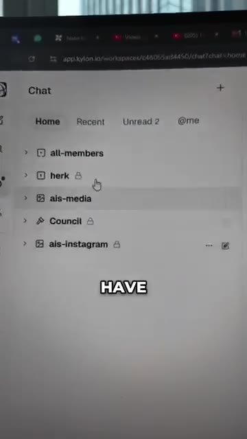
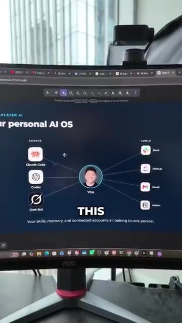
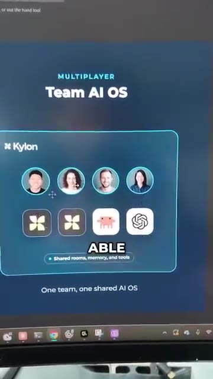
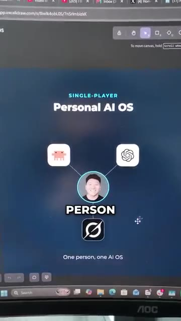

Donc je parle en ce moment même à CloudCode sur mon téléphone, mais ce n'est pas juste moi parce que vous pouvez voir qu'il y a aussi Cody et qu'il y a aussi Aiden. C'est essentiellement une interface de style Slack qui est un constructeur d'agents, et voici tout le monde qui est ici. C'est ma vraie équipe, donc moi, Aiden et Cody, mais aussi les agents. Donc vous pouvez voir que nous avons les abonnements CloudCode et Codex d'Aiden ainsi que mes abonnements CloudCode et Codex, et nous pouvons personnaliser ce qu'ils font et comment ils pensent.
Interface & Outils : Application web Kylon (app.kylon.io) et application mobile de messagerie.
Contenu textuel & Code : Noms des membres humains (Nate Herk, Aidan Stanik, Kodi Zene) et listes d'agents IA (Aidan's Claude, Nate Codex).
Action / Démonstration : Navigation à travers l'interface de gestion d'équipe et d'agents sur Kylon.

🔍 AgrandirC'est en gros GrokBot, mais si vous pouviez inviter vos coéquipiers, vos vrais coéquipiers humains, dans GrokBot. Parce qu'ici, si je voulais créer un nouvel agent, tout ce que j'aurais à faire, c'est de cliquer sur ce bouton, et je peux leur donner un nom, choisir où ils sont hébergés, ce qui peut être sur Kylon, sur Codex, ou Claude Code. Ce qui signifie que vous pouvez réellement utiliser vos abonnements ici plutôt que de payer une facturation par API. Nous avons donc en gros ces différentes salles. Et dans chaque salle, nous pouvons avoir un nombre différent d'agents et d'humains qui vivent dans cette salle et qui peuvent communiquer entre eux.
Interface & Outils : Application web Kylon (app.kylon.io)
Contenu textuel & Code : Options de menu (New room, New agent, Invite member) et paramètres de configuration d'un agent IA. [DESC_IMAGE_3] Navigation dans les différents salons et espaces de travail collaboratifs.
Action / Démonstration : Configuration et création d'un nouvel agent IA avec choix du mode d'hébergement.

🔍 Agrandir
🔍 Agrandir
🔍 AgrandirCe qui signifie que dans cette pièce, Aiden et Cody peuvent réellement parler à mon abonnement Claude Code. Et à l'intérieur de chaque pièce, vous pouvez créer des applications et des automatisations. Donc, dans cette pièce, nous avons une application pour un véritable tableau de bord de suivi. Et nous avons une automatisation qui se déclenche chaque jour, qui est un chef de projet qui nous aide à maintenir notre responsabilité. L'idée générale est que nous passons de tout cet univers des systèmes d'exploitation d'IA personnels à un environnement où nous en construisons un pour toute l'équipe.
Interface & Outils : Navigateur web affichant un tableau de bord d'OS IA personnel.
Contenu textuel & Code : Schéma relationnel montrant les agents IA (Claude Code, Codex, Grok Bot) et les outils connectés (Slack, ClickUp, Gmail, Notion).
Action / Démonstration : Présentation visuelle de l'architecture d'un système d'exploitation IA personnel connectant divers agents et outils.

🔍 AgrandirDonc maintenant ça ressemble à ça, où nous avons des humains et des agents et ils sont tous capables de collaborer plutôt que de simplement le construire autour d'une seule personne. Donc si vous voulez essayer l'outil et obtenir 50 dollars gratuits pour faire des tests, commentez simplement Kylon et je vous enverrai le lien.
Interface & Outils : Application web Kylon / Excalidraw
Contenu textuel & Code : Schémas conceptuels comparant 'Personal AI OS' (single-player) et 'Team AI OS' (multiplayer) avec des icônes d'utilisateurs et d'outils d'IA.
Action / Démonstration : Présentation visuelle et comparaison des architectures d'agents IA en mode individuel vs collaboratif.

🔍 Agrandir
🔍 Agrandir